PESQUISA DOCUMENTADA · 23/10/2026 · SEM ALTERAÇÃO DO PROJETOO que apartamentos entregues ajudam a antecipar
Comparação para Guedala Park III, Torre 02, final 06, planta de canto de 40,18 m². A pesquisa acrescenta evidências visuais ao acervo existente; não altera FreeCAD, orçamento ou decisões.
Resultado principal
O primeiro vídeo indicado é a referência visual mais útil de apartamento vazio; o segundo já é uma referência de reforma. Ambos são de Edson Lustosa, publicados em 2021. Seus metadados não identificam o empreendimento. A equivalência e o espelhamento foram informados por Elias; os quadros mostram uma organização compatível com essa família de plantas, mas não permitem certificar todos os vãos ou a identidade da unidade.
A referência adicional mais útil encontrada foi Vila das Belezas 3, de Tudo da Mona, a partir de cerca de 10:00. Mostra uma unidade vazia após a sequência de áreas comuns. A tipologia exata ainda não está comprovada. Não foi confirmado, nas buscas realizadas, um tour de entrega do próprio Guedala III com correspondência inequívoca à Torre 02/final 06.
Diferença que importa para a obra: em V1, a parede da cozinha aparece revestida em extensão maior que um simples barrado. No memorial do Guedala III, a cozinha tipo prevê barrado cerâmico sobre a bancada e pintura no restante. Não assumir cerâmica até o teto como item entregue. A decisão existente de trocar os revestimentos da cozinha e banheiro permanece; a pesquisa não quantifica demolição ou compra.
Base de comparação do seu apartamento
Conferida visualmente a planta oficial, uma página, válida para Torre 02/final 06 do 4º ao 16º pavimento. A leitura da pesquisa anterior identifica o 8º andar e 40,18 m². Não se trata de medição do imóvel acabado.
Ver planta usada na comparação
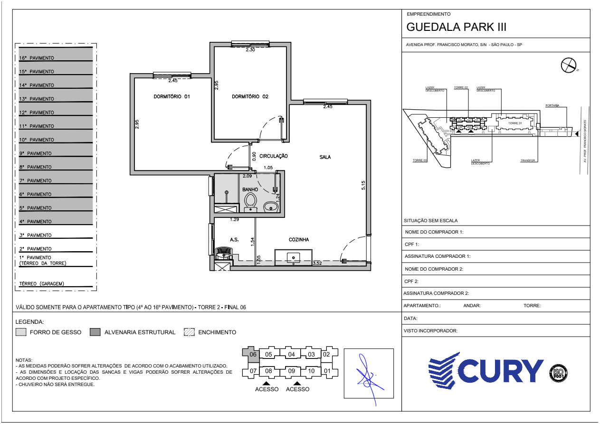
A assinatura geométrica que interessa é: dois quartos lado a lado; sala ao lado do dormitório 02; banheiro central com janela lateral; cozinha junto à entrada; área de serviço na extremidade com janela própria; ausência de sacada. A planta mostra enchimentos e forro de gesso, mas não dá as dimensões executadas de sancas/vigas.
O memorial Cury R00 de 03/04/2023, seção 2.1, páginas 12–13, foi relido e renderizado. Sala/circulação/cozinha: laje acabada; dormitórios: laminado; banheiro/lavanderia: cerâmica. Cozinha: barrado sobre bancada; lavanderia: cerâmica na parede hidráulica e lateral do shaft; banheiro: cerâmica na parede hidráulica e box, pintura nas demais. Bancada de cozinha em pedra natural/cuba inox; banho em pedra natural/cuba de louça. Esses dados têm prioridade sobre outra unidade filmada.
Consulta complementar: pesquisa comparativa anterior, análise do memorial e decisões atuais. A planta comercial Cury preservada em imagem local e em URL de origem aponta a família de finais 01/02/06/07, com faixas de pavimentos distintas. Isso direciona pesquisas, sem provar que qualquer vídeo desses finais seja equivalente.
Índice comentado de referências
Datas abaixo vêm dos metadados de publicação, não de data comprovada da filmagem ou entrega. Autoria e empreendimento são atribuídos ao título/descrição quando indicado. Nenhum autor ou morador foi contatado.
V1 · Unidade vazia; título apresenta como entregaEdson Lustosa - DE TUDO UM POUCO · publicação: 2021-04-30
- Identificação
- Empreendimento não identificado nos metadados; 2 dormitórios pelo título
- Semelhança
- Alta como candidata indicada por Elias; organização visual compatível, equivalência completa não comprovada
- Espelhamento
- Espelhada segundo Elias; não validado um levantamento de todos os vãos
- Diferenças e limites
- Parede cerâmica da cozinha mais extensa que o barrado previsto no memorial Guedala. Publicado em 2021; não é evidência identificada de entrega do Guedala III.
- Uso recomendado
- Prioridade 1: aparência de entrega e pontos de atenção
Quadros amostrados e metadados
Metadados públicos arquivadosFolha de contato: _3VZ7y1rVkI_contato_0.jpg
Edson Lustosa - DE TUDO UM POUCO · publicação: 2021-10-23
- Identificação
- Empreendimento não identificado; 2 dormitórios pelo título
- Semelhança
- Alta como referência indicada por Elias; não comprova mesma unidade de V1
- Espelhamento
- Espelhada segundo Elias; sem validação métrica
- Diferenças e limites
- Marcenaria, revestimentos, bancada, iluminação e aparelhos já instalados. Não representam padrão de entrega.
- Uso recomendado
- Prioridade 2: uso do espaço após reforma
Quadros amostrados e metadados
Metadados públicos arquivadosFolha de contato: SbHNt25EPzk_contato_0.jpg
Folha de contato: SbHNt25EPzk_contato_1.jpg
Tudo da Mona · publicação: 2023-01-20
- Identificação
- Cury Vila das Belezas 3, identificação do título; torre/final/área não confirmados
- Semelhança
- Parcial: cozinha/área de serviço, janelas e quartos são úteis; mesma planta de ponta não comprovada
- Espelhamento
- Indeterminado
- Diferenças e limites
- Áreas comuns ocupam o início; observar a unidade somente a partir de cerca de 10:00. Não transferir acabamentos ou pontos.
- Uso recomendado
- Melhor referência adicional de entrega encontrada nesta rodada
Quadros amostrados e metadados
Metadados públicos arquivadosFolha de contato: YbMzhb1Kppw_contato_0.jpg
Folha de contato: YbMzhb1Kppw_contato_1.jpg
Arquiteta Agnes Livinalli · publicação: 2026-09-16
- Identificação
- Guedala Park III / studio 40 m² conforme título e descrição da autora
- Semelhança
- Mesmo empreendimento declarado; tipologia diferente ou não demonstrada para o final 06
- Espelhamento
- Indeterminado
- Diferenças e limites
- Studio/área integrada; não documenta a entrega bruta nem o conjunto de dois dormitórios da planta do usuário.
- Uso recomendado
- Referência secundária de reforma, sem validar entrega
Quadros amostrados e metadados
Metadados públicos arquivadosFolha de contato: VSrc_Tcay80_contato_0.jpg
Corretor Guerreiro · publicação: 2023-04-27
- Identificação
- Guedala Park / 40 m² conforme título; fase e final não confirmados
- Semelhança
- Mesmo empreendimento comercial; equivalência de tipologia não comprovada
- Espelhamento
- Indeterminado
- Diferenças e limites
- Interiores equipados de divulgação em 2023; não usar mobiliário, revestimentos ou teto como itens entregues.
- Uso recomendado
- Separar do acervo de entrega
Quadros amostrados e metadados
Metadados públicos arquivadosFolha de contato: rnCohyLI0LA_contato_0.jpg
ᴀɴᴅᴇʀꜱᴏɴ ᴍᴀʀɪɴʜᴏ | ᴄᴏʀʀᴇᴛᴏʀ ᴅᴇ ɪᴍóᴠᴇɪꜱ · publicação: 2021-08-19
- Identificação
- Cury Vila das Belezas conforme título; fase não confirmada
- Semelhança
- Não avaliável pelo interior, que não aparece na amostra inspecionada
- Espelhamento
- Não avaliável
- Diferenças e limites
- Apesar do título mencionar apartamento, a sequência amostrada mostra torres/canteiro. Não resolve layout ou instalações internas.
- Uso recomendado
- Descartada para comparação interna
Quadros amostrados e metadados
Metadados públicos arquivadosFolha de contato: ug4D5qADx4Q_contato_0.jpg
Apezinho da Lidi · publicação: 2025-12-09
- Identificação
- Cury Máximo Jardim; 42 m² com sacada integrada à lavanderia segundo a autora
- Semelhança
- Baixa para equivalência: presença de sacada muda o arranjo
- Espelhamento
- Indeterminado
- Diferenças e limites
- Porta de correr para sacada e lavanderia integrada à varanda, diferentemente da planta oficial do Guedala analisada.
- Uso recomendado
- Comparação genérica de acabamentos; excluída como mesma planta
Quadros amostrados e metadados
Metadados públicos arquivadosFolha de contato: 1oYwAUrHx4E_contato_0.jpg
Evidências visuais com navegação por tempo
São prévias públicas de navegação do YouTube (storyboards), não capturas de uma reprodução integral. Tempos aproximados calculados pelo intervalo informado pelo player; abra o trecho e recue alguns segundos para conferir. As imagens de 160 × 90 ou 320 × 180 pixels não permitem ler especificações pequenas nem medir ambientes. “Observado” significa visível na amostra; não inclui fala que não foi ouvida.
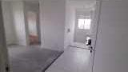
V1 · 01:30 aprox. · Cozinha / sala
Observado: Unidade sem móveis; pia e área de serviço aparecem na sequência.
Limite / aplicação: O vazio ajuda a enxergar percursos, mas não confirma o final ou as dimensões.
Abrir vídeo neste trecho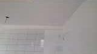
V1 · 02:30 aprox. · Teto e parede da cozinha
Observado: Cerâmica na parede e faixa/volume junto ao teto.
Limite / aplicação: Não classificar visualmente o volume como viga estrutural ou shaft; verificar planta de forro e instalação.
Abrir vídeo neste trecho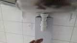
V1 · 03:30 aprox. · Sob a pia
Observado: Tubulação de escoamento aparente sob a bancada.
Limite / aplicação: Reservar acesso de manutenção no estudo; posição e altura reais ainda precisam de levantamento.
Abrir vídeo neste trecho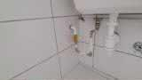
V1 · 04:30 aprox. · Pontos na parede hidráulica
Observado: Conexões e registros próximos à pia/área de serviço.
Limite / aplicação: Não identificar fluido, bitola, pressão ou vazão pela cor da peça. O vídeo sem áudio não confirma a função de cada ponto.
Abrir vídeo neste trecho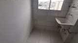
V1 · 05:30 aprox. · Lavanderia
Observado: Tanque suspenso e janela na extremidade, com parede revestida.
Limite / aplicação: Conferir o conflito entre tanque/bancada, janela, varal e futuro aquecedor; sem dimensionar a partir da imagem.
Abrir vídeo neste trecho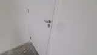
V1 · 06:00 aprox. · Parede e placas elétricas
Observado: Placas/caixas na parede próxima à entrada da cozinha.
Limite / aplicação: A imagem não informa tensão, circuito, carga ou posição na unidade do usuário.
Abrir vídeo neste trecho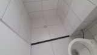
V1 · 08:00 aprox. · Banheiro
Observado: Louças e revestimento cerâmico em ambiente pequeno.
Limite / aplicação: Não copiar o modelo do lavatório; o Guedala tem especificação própria de bancada em pedra natural e cuba de louça.
Abrir vídeo neste trechoV1 · 08:30 aprox. · Janela do banheiro
Observado: Abertura com vidro de aspecto translúcido.
Limite / aplicação: Conferir abertura da folha, peitoril, box e folga para manutenção na vistoria.
Abrir vídeo neste trecho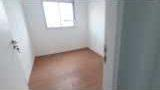
V1 · 11:00 aprox. · Dormitório
Observado: Piso com aparência amadeirada, diferente do piso cinza da sala.
Limite / aplicação: Consistente visualmente com entrega de laminado nos quartos, mas o material do vídeo não foi ensaiado/identificado.
Abrir vídeo neste trecho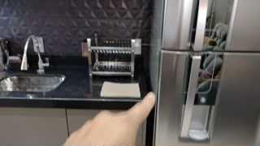
V2 · 03:00 aprox. · Cozinha após reforma
Observado: Bancada, armários, torneira e eletrodomésticos instalados.
Limite / aplicação: Referência de composição e manutenção; não define custo, folgas ou itens entregues pela construtora.
Abrir vídeo neste trecho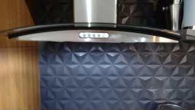
V2 · 06:00 aprox. · Aparelho sobre o fogão
Observado: Aparelho de exaustão/filtragem com formato de coifa.
Limite / aplicação: Não é possível confirmar duto ou modo de funcionamento. O memorial do Guedala prevê ponto para depurador, sem infraestrutura de coifa.
Abrir vídeo neste trecho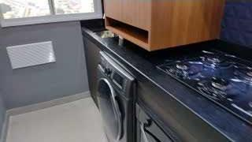
V2 · 07:00 aprox. · Extremidade da cozinha
Observado: Janela e grelha aparente sob ela.
Limite / aplicação: Não presumir finalidade da grelha nem ocultá-la por marcenaria; confrontar gás/ventilação com projeto executivo.
Abrir vídeo neste trecho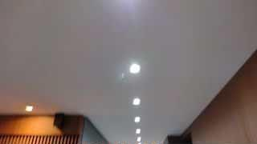
V2 · 09:00 aprox. · Teto reformado
Observado: Spots e acabamento de teto instalados.
Limite / aplicação: Reforma visível não valida pé-direito final, rebaixo ou passagem de instalações no Guedala.
Abrir vídeo neste trecho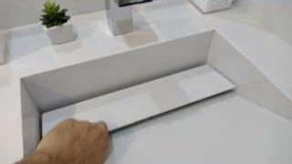
V2 · 14:00 aprox. · Banheiro reformado
Observado: Bancada/lavatório e revestimentos diferentes do vídeo vazio.
Limite / aplicação: Útil para leitura de uso; não é referência de padrão de entrega nem aprovação da solução do projeto.
Abrir vídeo neste trecho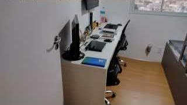
V2 · 18:30 aprox. · Dormitório usado como escritório
Observado: Bancada e equipamentos de trabalho no quarto.
Limite / aplicação: Referência de uso do cômodo; não comprova passagem, profundidade de bancada ou cargas elétricas.
Abrir vídeo neste trecho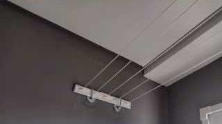
V2 · 26:00 aprox. · Varal / teto
Observado: Varal suspenso aparece na sequência da área de serviço.
Limite / aplicação: A posição é referência visual; teto, fixação, cargas e trajetória da janela precisam de conferência própria.
Abrir vídeo neste trecho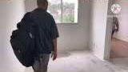
V3 · 10:20 aprox. · Unidade vazia
Observado: Cozinha/área de serviço com tanque e janela, sem a marcenaria do início do vídeo.
Limite / aplicação: As cenas anteriores mostram espaços de uso comum; não misturar essas cozinhas com a unidade privativa.
Abrir vídeo neste trecho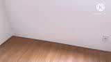
V3 · 13:00 aprox. · Dormitório
Observado: Piso amadeirado e paredes claras.
Limite / aplicação: Referência adicional de aparência; não comprova marca, espessura ou nivelamento do piso.
Abrir vídeo neste trechoV3 · 13:30 aprox. · Lavanderia
Observado: Janela, parede revestida e tanque na extremidade.
Limite / aplicação: Comparar a organização, sem transferir tamanho do shaft, largura do vão ou pontos.
Abrir vídeo neste trecho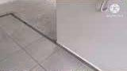
V3 · 14:00 aprox. · Transição de pisos
Observado: Encontro entre área cerâmica e piso cinza.
Limite / aplicação: A imagem sugere tratamentos distintos; medir desníveis na vistoria antes de definir regularização e piso novo.
Abrir vídeo neste trecho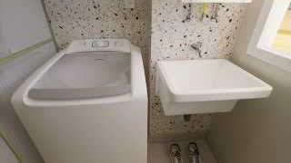
V4 · 03:30 aprox. · Lavanderia de projeto mobiliado
Observado: Tanque, máquina e acabamentos já compostos.
Limite / aplicação: Mesmo empreendimento declarado, mas reforma/studio não confirma entrega nem tipologia do final 06.
Abrir vídeo neste trecho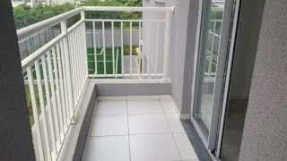
V7 · 02:00 aprox. · Sacada
Observado: Guarda-corpo e piso de varanda visíveis.
Limite / aplicação: Diferença decisiva: a planta oficial do usuário não tem essa sacada integrada à lavanderia.
Abrir vídeo neste trechoLista objetiva para a visita real
- Registrar torre, final, pavimento e revisão de planta; filmar um percurso contínuo da entrada à lavanderia, sala, circulação, banheiro e quartos.
- Fotografar cada parede de frente e o teto de cada ambiente. Usar uma referência de escala medida no local; não reaproveitar medidas de outra unidade.
- Medir larguras acabadas, esquadros, pé-direito, sancas, volumes técnicos, peitoris, vãos e sentido de abertura de portas/janelas.
- Na cozinha/lavanderia, registrar bancada e tanque existentes, sifões, saídas, registros, grelhas e transições de piso; identificar pontos pelo projeto/manual, sem deduzir função pela cor.
- No banho, registrar bacia, bancada, sifão, registros, janela e acesso para manutenção; cruzar com o gabinete em estudo antes de fabricar.
- Mapear tomadas, interruptores, quadro e identificação de circuitos; conferir tensão e instalações com profissional responsável.
- Comparar acabamentos recebidos com o memorial aplicável e registrar divergências. Não usar decorado ou reforma como padrão contratual.
Não é necessário pedir novamente decisões já tomadas: revestimento novo na cozinha/banheiro, manutenção possível do vaso e escolhas de mobiliário continuam registradas no projeto. Esta lista trata de evidência física.
Método, cobertura e limitações de acesso
- Foram analisados metadados e imagens amostradas de sete vídeos; seis consultas diretas à busca pública do YouTube e buscas web complementares estão registradas. Os resultados de busca não selecionados são pistas, não referências visualmente verificadas.
- V1 e V2 anunciam legenda automática em português. As duas requisições aos URLs de legenda disponibilizados pelo player retornaram zero bytes. Não há transcrição utilizável, e nenhuma fala foi atribuída ao autor. Os demais vídeos foram avaliados por metadados/quadros, sem análise de áudio.
- O Firecrawl não executou as três consultas iniciais por falta de créditos. Não houve novas tentativas nesse serviço nem troca de conta. A ferramenta web falhou ao abrir as duas páginas de vídeo; a consulta HTTP pública no computador recuperou metadados e storyboards.
- A primeira chamada de rede local falhou por resolução de nome no ambiente restrito. O acesso ampliado foi autorizado e concluiu. Não houve negativa de segurança pendente, login, contorno de autenticação ou necessidade de operar o navegador do usuário.
- As folhas de contato amostram a cada 30 segundos; alguns storyboards completos também foram inspecionados para contextualizar cozinha, banheiro e a transição entre áreas comuns e unidade. Podem existir detalhes relevantes entre os quadros não avaliados.
- O espelhamento dos vídeos enviados está registrado como informação de Elias. A semelhança visual não equivale a mesma implantação, dimensões, espessuras, estrutura, instalações ou fase de empreendimento.
- O tour comercial oficial já citado no acervo, Bl2ayPHnf28, apareceu nesta busca com o título “Decorado - Guedala Park Premium.”, autoria Cury. Foi classificado como pista de decorado, sem nova inspeção de imagens nesta rodada.
- O tour 360 encontrado na busca web permaneceu apenas pista: sem navegação/análise interna ou confirmação de tipologia/padrão de entrega nesta pesquisa.
Arquivos: índice CSV, índice JSON, buscas gerais, buscas focadas no Guedala, metadados e imagens em fontes/. Originais do projeto e pesquisa anterior preservados; nenhum FreeCAD foi aberto ou alterado nesta tarefa. Nenhum contato, compra, publicação ou envio de documentos a terceiros.